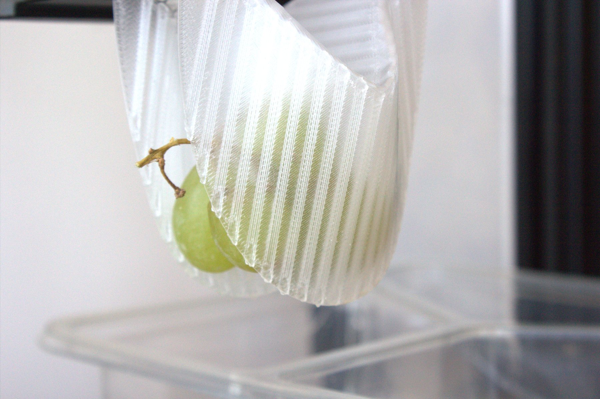
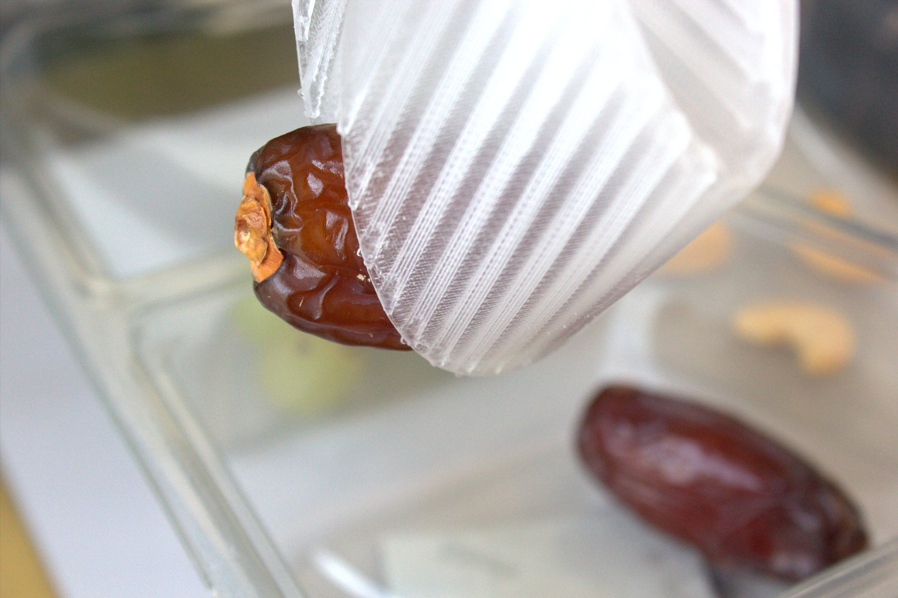
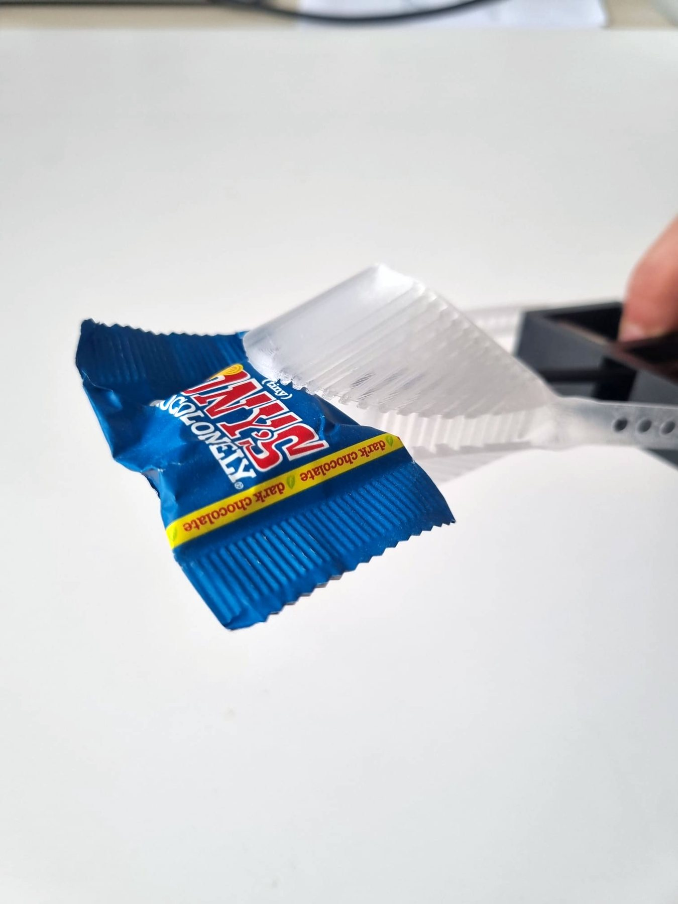
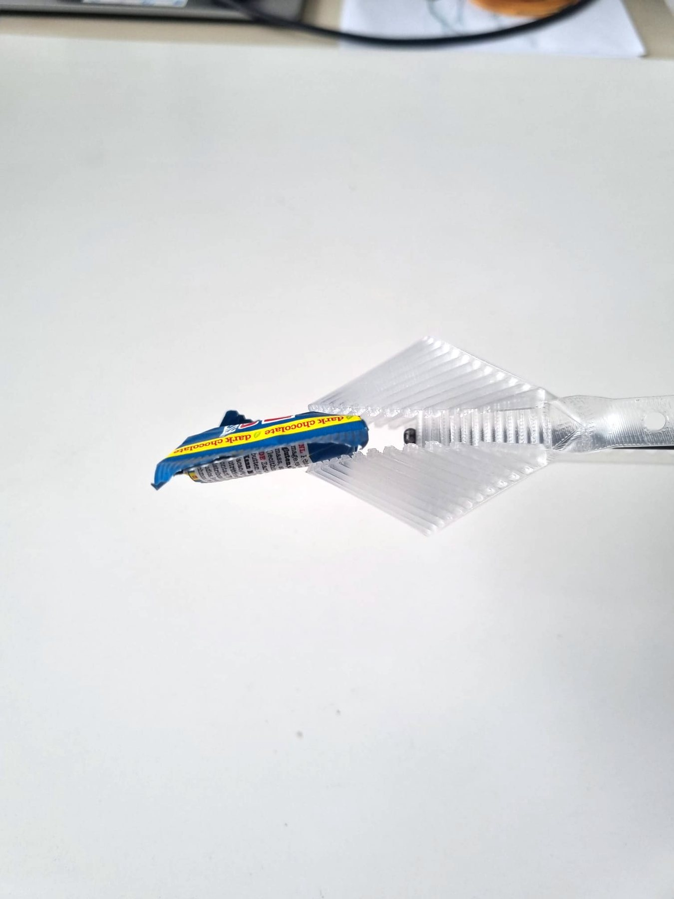

Kripper — the kirigami gripper
A monolithic, fully compliant gripper based on flexible shells that deform to grasp the object. One printed part, no joints, no seals, nothing to service.
Ambionic — Kripper
Flexible but strong.
A monolithic kirigami gripper that folds itself around whatever you hand it — dates, grapes, nuts, packets — without a single change of tooling.
One gripper, any texture
The shells deform to the object instead of forcing the object to fit the shells. No force tuning, no recipe per SKU, no tool change between products.
Collision protection
Compliance is structural, not a control loop. Run Kripper into a tray, a fixture or a hand and the shells simply give way, then spring back to shape — no sensor to trip, no e-stop, no downtime.



